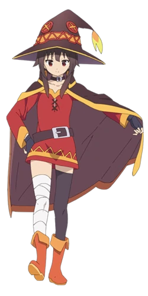

Megumin (めぐみん) adalah Arch Wizard dari Crimson Magic Clan di Dunia Fantasi, dan merupakan orang pertama yang bergabung dengan party Kazuma. Dia adalah salah satu karakter utama dari seri KonoSuba.
Megumin adalah gadis yang keras, riuh, dan eksentrik dengan bakat sandiwara. Menjadi anggota Klan Sihir Merah, dia berbagi banyak karakteristik orang-orangnya, seperti menunjukkan kecenderungan chuunibyou dan menyukai nama-nama aneh. Megumin sering dianggap sombong dan arogan, terus-menerus membual tentang kekuatan penghancurnya, tetapi dengan cepat menghentikan tindakannya saat berada dalam situasi putus asa, seperti saat Kazuma mengancam akan menamparnya dengan penutup matanya.
Meskipun dia berperan sebagai penyihir yang sangat kuat, Megumin sebenarnya cukup kekanak-kanakan dan tidak dewasa. Dia peka tentang usianya dan tubuhnya yang kurang berkembang, menjadi sedih atau agresif ketika diperlakukan seperti gadis kecil. Dia mempertahankan persaingan yang agak kecil dengan teman sekelas lamanya Yunyun, dan tidak pernah melewatkan kesempatan untuk menindas dan melecehkannya, meskipun diam-diam melihatnya sebagai teman.
Megumin benar-benar terobsesi dengan sihir ledakan, menginvestasikan semua peningkatan statnya dalam satu mantra ledakan karena dia pikir semua sihir lainnya pada dasarnya tidak berguna, meskipun mantra tersebut menghabiskan seluruh energinya setelah satu kali penggunaan dan umumnya tidak praktis. Dia menolak untuk mempelajari jenis sihir lain, secara rutin terbang di hadapan semua logika untuk melindungi sihir ledakannya. Karena ketegarannya, tidak ada pihak lain yang akan memilikinya meskipun Klan Sihir Merah dikenal sebagai penyihir kuat mereka, dan Kazuma hanya menerimanya setelah dia memerasnya. Dia menunjukkan kontrol diri nol ketika datang ke ledakannya, dan akan sering mengabaikan konsekuensi apa pun selama dia bisa mengucapkan satu mantra ledakan sehari. Contoh paling mengerikan dari ini adalah ketika dia terus meledakkan salah satu kastil Jenderal Raja Iblis, bahkan setelah dia datang dengan pasukannya dan secara khusus mengancam seluruh desa untuk berhenti.
Megumin
Kono Subarashii Sekai ni Shukufuku wo!
Biographical Information
Japanese
めぐみんCharacteristics
Umur 14
Jenis Kelamin Perempuan
Warna Mata Merah
Ras Manusia
Warna Rambut Coklat